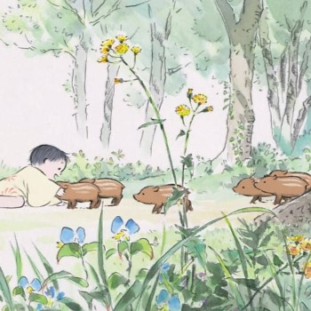
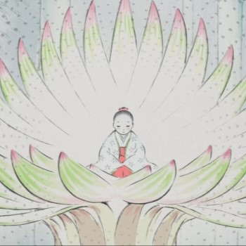
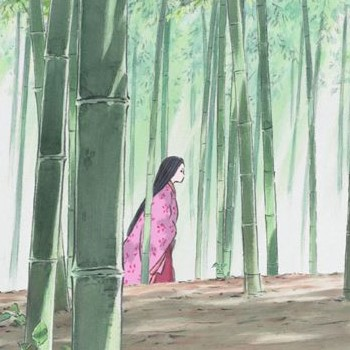
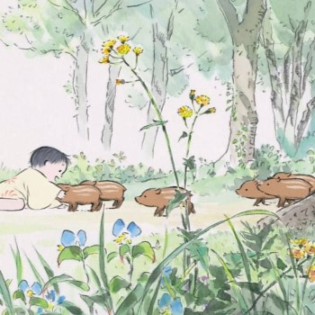
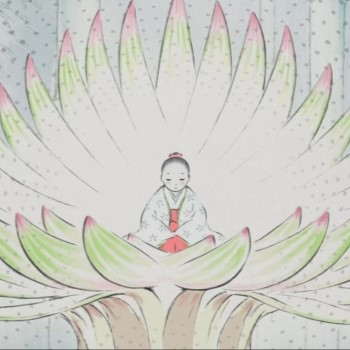
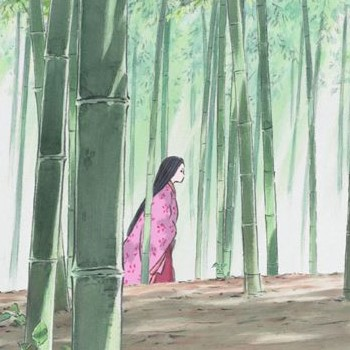
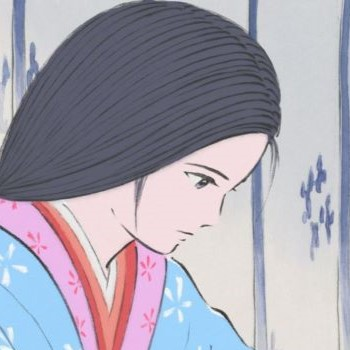
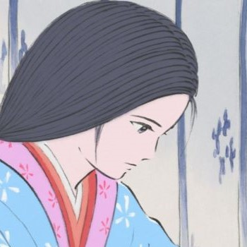

O Conto da Princesa Kaguya é um filme de animação japonês de 2013, com roteiro e direção de
Isao Takahata, baseado no conto literário anônimo O Conto do Cortador de Bambu e produzido pelo Studio
Ghibli.
Foi inicialmente anunciado para ser lançado simultaneamente com Vidas ao Vento, outro filme Ghibli de Hayao
Miyazaki, no verão de 2013, no Japão. Esse feito teria marcado a primeira vez que os trabalhos dos dois
diretores seriam lançados juntos desde Meu Amigo Totoro e Túmulo dos Vagalumes, ambos de 1988. No entanto,
em fevereiro de 2013, a distribuidora Toho anunciou que o lançamento de ‘Princesa Kaguya’ seria adiado para
o outono de 2013, alegando preocupações de que os storyboards ainda não estivessem concluídos.
Sinopse:
Informações extas:
Esta animação é baseada no popular conto japonês “O Conto do Cortador de Bambu”. Kaguya
era um minúsculo bebê quando foi encontrada dentro de um tronco de bambu brilhante. Passado o tempo, ela
se transforma em uma bela jovem que passa a ser cobiçada por 5 nobres, dentre eles, o próprio Imperador.
Mas nenhum deles é o que ela realmente quer. A moça envia seus pretendentes em tarefas aparentemente
impossíveis para tentar evitar o casamento com um estranho que não ama. Mas Kaguya terá que enfrentar
seu destino e punição por suas escolhas.
O Conto da Princesa Kaguya marca o fim da carreira de Isao Takahata, sendo seu último
filme dirigido antes do seu falecimento, em 2018.
No Brasil, o filme estreou nos cinemas em 16 de julho de 2015, chegando posteriormente a ser lançado em
DVD e Bluray pela Califórnia Filmes com dublagem e legendas em português.
Atualmente está disponível junto a mais outros 20 filmes do Studio Ghibli na plataforma de streaming
Netflix.
 





 
